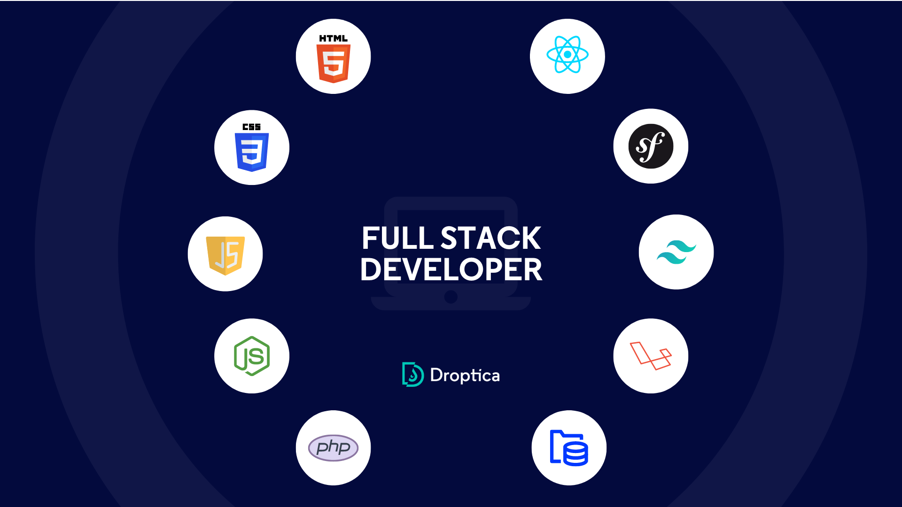

A Full Stack Web Developer is a versatile engineer
skilled in both front-end and back-end development.
They build and maintain web applications, handling
everything from the user interface to server-side logic.
On the front-end, they work with HTML, CSS, JavaScript,
and frameworks like React or Angular to create interactive
and responsive interfaces.
On the back-end,they use languages like Python,Node.js,
or Ruby and manage databases like MySQL or MongoDB.
They also develop APIs for server-client communication.
Full Stack Developers use tools like Git for version control,
manage web servers, and deploy applications.
Their ability to work across all layers of development makes
them valuable in any project, capable of managing the entire
lifecycle of a web application.
